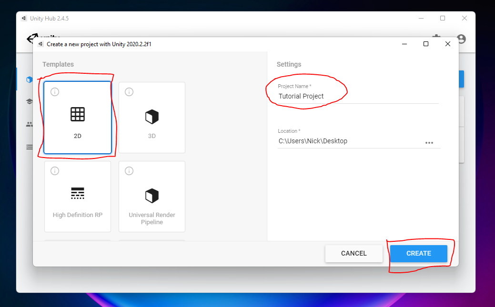
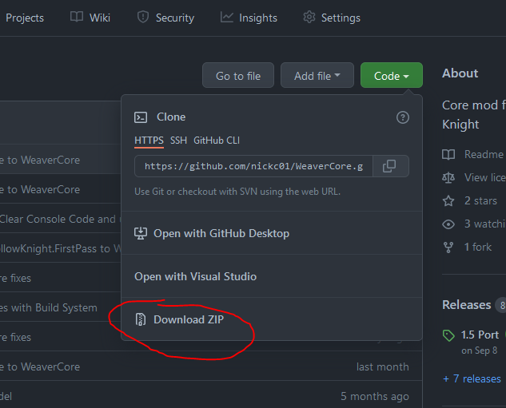
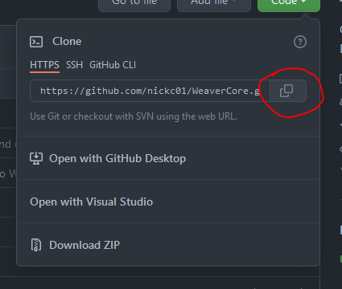
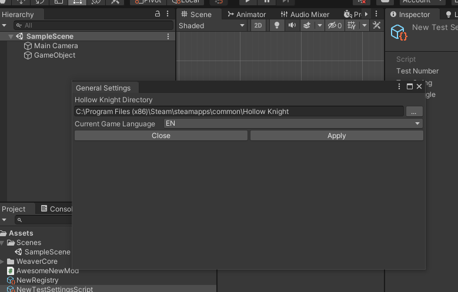

Welcome to WeaverCore!
WeaverCore is a Hollow Knight modding library designed to allow modders to take full advantage of the Unity Editor to make brand new content for the game, such as new Enemies, Bosses, Scenes, NPCs, and more
If you want to see some examples of where WeaverCore is used, check out the Inferno King Grimm project, and the Corrupted Kin project
Note
This guide assumes you have some knowledge on how to program in C# and how to use the Unity Editor. If you need some guides on how to program in C#, you can look up some tutorials on how to do it (Like Brackeys). If you are looking for a guide on how to install the Unity Editor, you can click here
Installation
First, open up the Unity Hub, and create a new 2D Unity Project:
Note
WeaverCore requires Unity Editor version 2020.2.2 to work. Make sure you are creating the project under this version

When the project is fully loaded up in the Editor, right click on the "Assets" folder and click on "Show In Explorer" to open it up in the Windows Explorer.

Downloading WeaverCore
The next step is to download WeaverCore. There are two main ways it can be installed:
Method 1 : Downloading the Zip
To download WeaverCore as a zip, go to the WeaverCore Repository Page click on the "Code" button and then click on "Download ZIP". This will download the entire WeaverCore project as a zip file.

Once downloaded, extract all the contents into a "WeaverCore" folder in the "Assets" folder of your project. The end result should look like this:

Method 2 : Using GIT
To use GIT to download WeaverCore, first make sure you have GIT installed on your computer. You can download it here : https://git-scm.com/download/win
Next, open up a CMD or Powershell terminal in the "Assets" folder, you can do this by holding Shift and right clicking in the folder window, and you will see an option for either Powershell or CMD.

Next, go to the WeaverCore repository page, and copy the HTTPS clone link

Then, in the CMD or Powershell window, type in "git clone" and paste in the copied link, the result should look like this:

Hit Enter, and the repository should start downloading into the Assets folder. This may take a while to finish

When you finished either method
Once that's done, go back to the Unity Editor, and WeaverCore will start loading (this may take a while). You will know when it's done when you see "WeaverCore is Fully Setup!" in the Console

The last step before we do anything is to check if WeaverCore has found your Hollow Knight installation, since the game is required for WeaverCore to function. Go to "WeaverCore -> Settings -> General Settings", and make sure that the "Hollow Knight Directory" is set to the folder where Hollow Knight.exe is located. (Be sure to click apply to apply the settings).
Note
Make sure your Hollow Knight installation has the Hollow Knight Modding API installed. You can install it via the Scarab Mod Installer : https://github.com/fifty-six/Scarab/releases

Once that's done, you can now start modding with WeaverCore! Continue to "Setting Up Registry" to continue with the tutorial